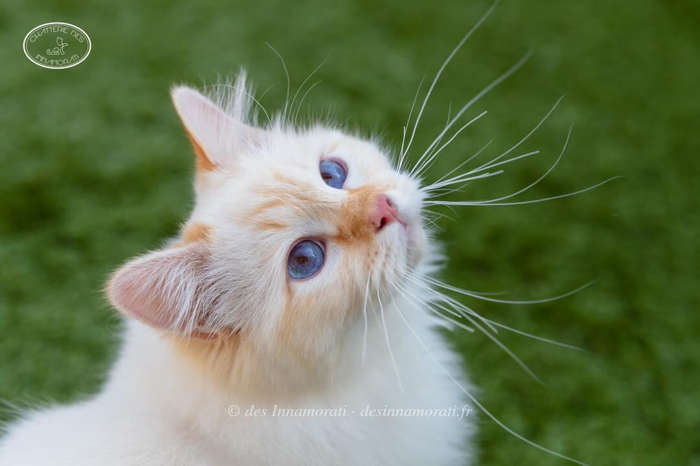

RobeRed tabby point
Naissance2 mai 2018
Album3 photos, de février 2019 à octobre 2020


Palmarès
3 expositions · 6 jugements2019
- BordeauxEXC1 · NOM
- BordeauxEXC1
2018
- ParisEXC1
- ParisEXC1
- Paray le MonialEXC2
- Paray le MonialEXC1
EXC Excellent (classement) · CAC, CACIB, CAGCIB, CACS certificats de champion, champion international, grand champion international et suprême · CAP, CAPIB, CAGPIB, CAPS équivalents pour les chats stérilisés · BIV meilleur de la variété · NOM nommé pour le Best in Show · BIS Best in Show · BOB Best of Best, le meilleur de toute l’exposition
Photos réduites et marquées. Elles appartiennent à la Chatterie des Innamorati et ne peuvent pas être reprises dans une annonce.